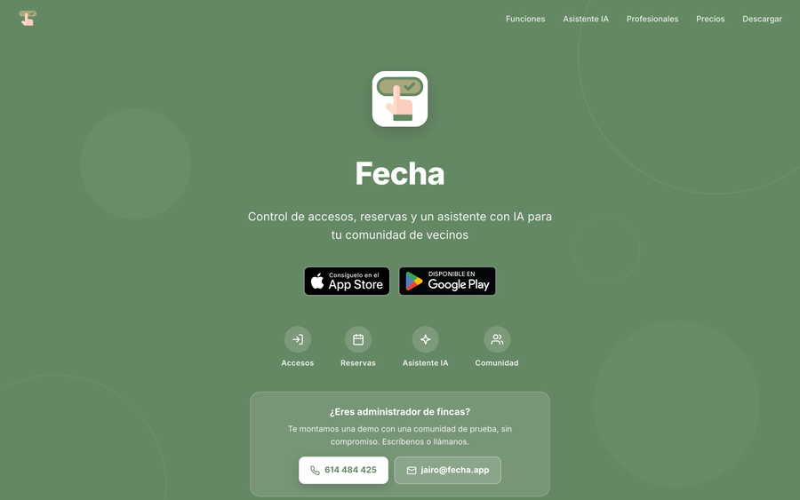
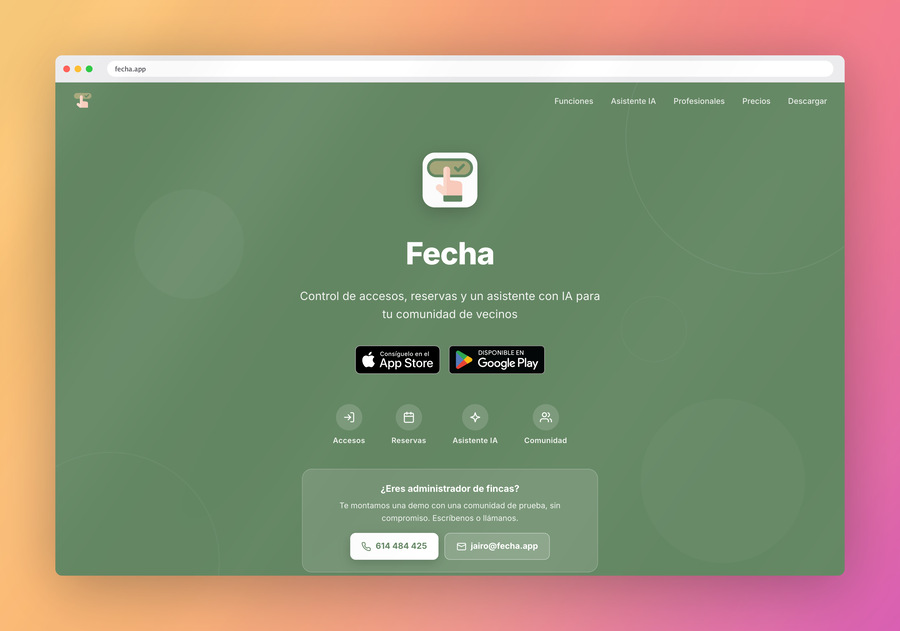

One command turns a plain capture — or a live website — into something you can drop in a product update without apologising.
shot https://fecha.app. No editor, no upload.Needs Go, and Chrome only if you render websites. Builds a single static binary into ~/.local/bin.
curl -fsSL https://raw.githubusercontent.com/kidandcat/shot/main/install.sh | shAlso installs a Claude Code skill, so your agent knows how to drive it. Skip it with --no-skill, or use go install github.com/kidandcat/shot@latest.
Paste this into Claude Code, Cursor, or whatever is sitting in your terminal. It installs the tool and the skill that teaches it the flags, the defaults and the sharp edges.
Install shot (github.com/kidandcat/shot) by running: curl -fsSL https://raw.githubusercontent.com/kidandcat/shot/main/install.sh | sh — then use it whenever I ask you to make a screenshot look good or to screenshot a website.Same page, same second. The left is what your screenshot tool gives you. The right is shot with no flags at all.


shot <url>Pass a URL and it renders in a headless Chrome. No tabs, no bookmarks, no extensions — the address bar in the image is drawn, so it looks the same on every machine.
Six mesh gradients that blend several colour blobs, plus sixteen linear ones. Or your own hex colours, or an image.
The soft diagonal shadow a window blind casts. Screened for the light, multiplied for the shade, so it never blows out a white UI.
A macOS title bar or a browser chrome, drawn to scale — including on retina captures, where a fixed-height bar reads as a hairline.
Grab a window, a region, or an explicit rectangle, and frame it in the same command. Straight to the clipboard with --copy.
Pages render at 3× device pixel ratio, so the image still looks right after Slack, X or your blog have finished downscaling it.
# A screenshot you already have
shot ugly.png --copy
# A live page, framed, straight to the clipboard
shot https://fecha.app --copy
# The whole page, in dark mode
shot https://fecha.app --full-page --dark
# A phone viewport
shot https://fecha.app --width 390 --height 844
# Capture a window and frame it
shot --capture window --bg midnight --chrome mac-dark --title "Marketplace"
# Your own colours, sized for a slide
shot in.png --bg "#0f2027,#2c5364" --ratio 16:9 -o out.pngDefaults are already tuned: sunrise mesh gradient, light rays, 7% padding, rounded corners, soft shadow. shot --list-bg shows every backdrop.